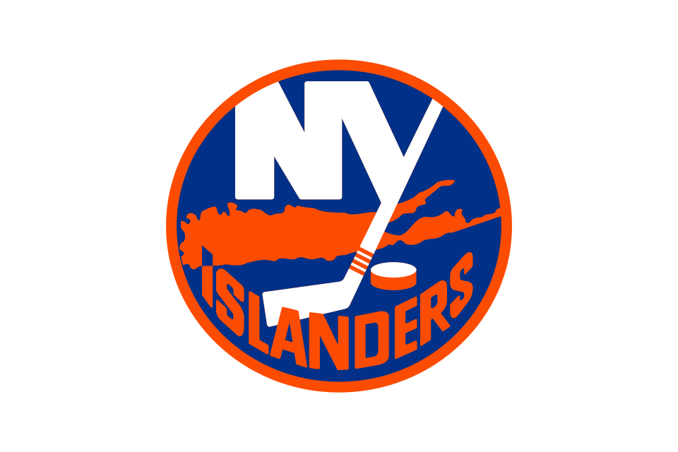

New York Islanders
Metropolitan · Eastern Conference · 40 headlines in the last 30 days
Islanders highlights
1 video
 Hurricanes vs. Islanders
Hurricanes vs. IslandersLatest Islanders news
40 stories
Weird Islanders: The Podcast! – Episode 94 – Jeff Hackett (with guest Sam Fels)
Joined again by writer, podcaster and Blackhawks fan Sam Fels, we remember goalie Jeff Hackett, who played decently in 500 NHL games for some of the worst teams of his era. Jeff Hackett’s NHL career has a defined pattern. Every time he was given a chance to rise from back-up to starter, the team in […]

Islanders News: Close, but not enough
The Islanders liked their effort at home against the Hurricanes on Thursday night, but in the end no points were to be had. Sure, there were some nice efforts, but ultimately it was a “they are who we thought they are” performance. It’s gonna be a slog this season. Islanders News Brett Hull and Kelly […]


Islanders show flashes of brilliance, but same problems turn up again in loss to Hurricanes
The Islanders lost consecutive games in regulation for the first time this season.

Islanders play first-place Hurricanes tough, edged out in third period in 5-3 loss
William Carrier scored the go-ahead goal in the third period and the Carolina Hurricanes beat the New York Islanders 5-3 on Thursday night.

Hurricanes 5 (EN), Islanders 3: Decent comeback, indecent ending
The Islanders overcame a horrible start to make it a game, a winnable game even, against the defending Cup champion Hurricanes, but in the end mistakes killed them on the way to a loss The Islanders hadn’t been in action for five days and looked it when the Canes pounced to a 2-0 lead in […]

Carrier's goal snaps 3rd-period tie as Hurricanes beat Islanders 5-3
NEW YORK (AP) — William Carrier scored the go-ahead goal in the third period and the Carolina Hurricanes beat the New York Islanders 5-3 on Thursday night.Logan Stankoven, Jesperi Kotkaniemi and Andrei Svechnikov also scored for Carolina, which won for the fourth time in five games.

Islanders add Ben Hutton on tryout contract for defensive depth
The Islanders held an optional skate Thursday morning, making it unclear whether Hutton would be needed to step into the lineup.

Brayden Schenn has fulfilled leadership role — and more — for Islanders
“He recognizes he was brought in here as much for his intangibles as what he brings on the ice,” DeBoer said Thursday.


On Tap: Canes at Isles 1 week from Global Series
Forsberg seeks Predators record sixth straight multipoint game; Penguins captain Crosby can pass Dionne in all-time points

Islanders Hometown Remix Jersey Ranks Near The Top Of NHL Fan Vote Of Jerseys
The New York Islanders, along with the rest of the NHL, unveiled their Hometown Remix Jersey on Monday morning.
Islanders News: Practicing and waiting
One more day till the Islanders are back in action, hosting the Cup champ Carolina Hurricanes and debuting their fisherman hometown remix unis. Meanwhile, we wait and they practice: Elsewhere
Stanley Cup champion Ben Hutton has shot to revive NHL career with Islanders
Veteran defenseman Ben Hutton signed a 10-day tryout contract with the Islanders as the team seeks defense depth following Ryan Pulock's injury.
REPORT: Islanders Will 'Try To Be A Player' In Kucherov's Potential Free Agency
The New York Islanders will have something of a salary war chest this summer, based on the upcoming salary cap increase to a projected $113.5 million.

Islanders Bring in Former Kings Defenseman With Plenty of NHL Experience
Stanley Cup champion Ben Hutton joins New York on a professional tryout, seeking to parlay a decade of blue-line reliability into a roster spot with his sixth franchise.


Islanders Sign Veteran Defenseman To PTO
The New York Islanders announced on Monday that they have signed left-shot defenseman Ben Hutton to a Professional Tryout.

Hometown Remix misses with Islanders fisherman, but other NHL jerseys look sharp
Fanatics and the NHL unveiled their Hometown Remix jerseys. Here's a rundown on what's new and photos of what each team will wear.
Gone Fishing: Islanders Unveil Hometown Remix Jersey
The New York Islanders, along with the NHL and Fanatics, officially unveiled their brand-new Hometown Remix alternate jerseys to be used for the 2026-27 season.

Ryan Pulock out 2-4 weeks in latest Islanders injury blow
You can add that to the pile of injuries the Islanders are currently dealing with.

Islanders News: Frightfest
The Islanders threw a dud for home fans on Halloween. They were shut out by Tristan Jarry, who faced just 18 shots. [Gamecenter | Game Summary | Event Summary | Natural Stat Trick] Islanders News Elsewhere

Emil Heineman booted from Islanders loss after big hit — and suspension could be coming
Though the Islanders did have a fair gripe that the hit was not initially whistled on the ice, the penalty itself was textbook.


Islanders commit six penalties in 4-0 loss to Oilers
Connor McDavid extended his NHL-record season-opening assist streak to 14 games by setting up Ryan Nugent-Hopkins’ second goal, and the Edmonton Oilers opened their road trip by beating the New York Islanders 4-0 on Saturday.

Connor McDavid extends his assist streak to 14 games as the Oilers beat the Islanders 4-0
NEW YORK (AP) — Connor McDavid extended his NHL-record season-opening assist streak to 14 games by setting up Ryan Nugent-Hopkins' second goal, and the Edmonton Oilers opened their road trip by beating the New York Islanders 4-0 on Saturday.Nugent-Hopkins scored on a power play in the third period to give McDavid his…

Islanders are looking good — now they can prove it against three of the league’s best
Keep on doing it at home and the rest of the league might stop and take notice.

Islanders News: We’re watching a superstar
Matthew Schaefer, what can you say? Ye gods, that kid. My Bossy, our luck. His performance last night, on another high-minutes night after Ryan Pulock left early with an injury, was astounding. Even accounting for his one(?) mistake that led to the equalizing goal, he had another dominant night on up through the OT…

Schaefer scores 2nd in OT, Islanders edge Wild
Defenseman wins it at 33 seconds for New York; Hughes has goal, assist for Minnesota

Islanders' Matthew Schaefer Leaves Lasting Impression On Wild Players And Coach 'He Should Be A Top-Three, Top-Five Player In The League'
Quinn Hughes and John Hynes laud the teenager's elite skating and historic production, comparing his early professional emergence to the development of the league's premier superstar blueliners.
Islanders 4, Wild 3 (OT): The Schaefer Show goes to Minnesota
Matthew Schaefer surpasses a Bobby Orr record as Isles beat the Wild on the road in overtime.


Matthew Schaefer gifts Islanders morale-boosting win with overtime winner
This was the sort of win to make believers of the Islanders.

Schaefer scores his 2nd goal of the game in OT to lift Islanders past Wild, 4-3
(AP) — Matthew Schaefer scored his second goal of the game on a wrist shot at 33 seconds of overtime to give the New York Islanders a 4-3 victory over the Minnesota Wild on Thursday night.Schaefer beat goalie Jesper Wallstedt from the right circle on a break.

Schaefer Snipes In Overtime, Shorthanded Islanders With Monumental 4-3 Win In Minnesota
Matthew Schaefer’s overtime heroics capped a six-game point streak as New York stunned the Wild in St. Paul, securing a gritty road victory despite missing key starters.
Ryan Pulock exits early in latest Islanders injury worry
The Islanders' early-season glut of injuries took another victim on Thursday.

Former Islanders Head Coach Inducted Into Nashville Predators' Golden Hall
The NHL icon returns to Bridgestone Arena to celebrate a legendary legacy spanning a Stanley Cup title, deep playoff runs, and his recent tenure as general manager.


Islanders Gameday News: Wild in Minnesota
The Islanders conclude their road trip in Minnesota, where it seems they used to have lots of roots. But now Anders Lee is with the Mormons, Brock Nelson is with the alpinemen, and Nick Leddy is…reaching a Zen state in a body of water somewhere, surely. To repeat the approach in Dallas: The Wild are […]